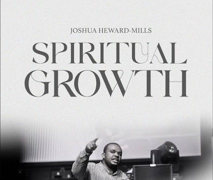
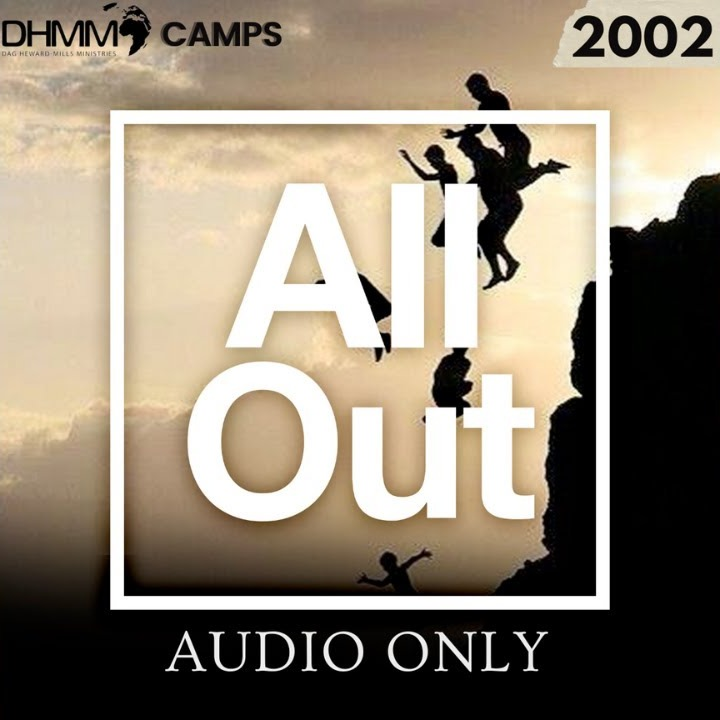
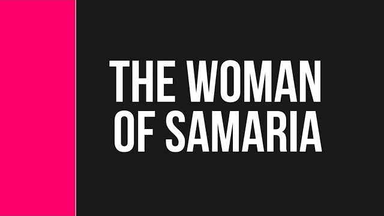

Full transcripts of four teaching series, built for reading. Each reader has chapter chunking, a save-your-place bookmark, highlights, a scripture index and full-text search — and works offline once loaded. A no-JavaScript version of each is linked underneath for viewers that don’t run scripts.

Joshua Heward-Mills · A sermon series
Spiritual Growth — no-JavaScript version

Dag Heward-Mills · Camp Meeting · Sevenoaks, UK · 2002
All Out — no-JavaScript version
Dag Heward-Mills · Flow Service
What It Means To Become A Shepherd — no-JavaScript version

Dag Heward-Mills · Unquenchable Fire Service · 2009
2 of the 10 messages have no captions on YouTube and are not transcribed.
Open reader →